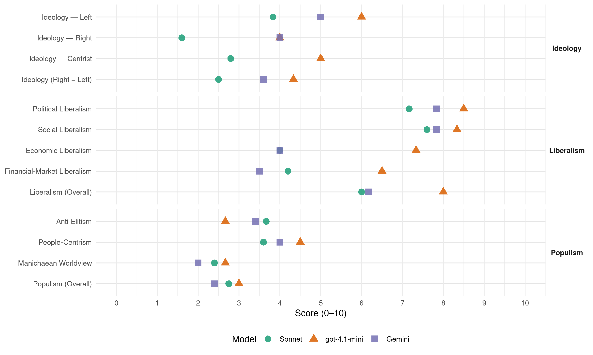

CU (Netherlands, 2021)
manifesto_id 22526_202103
Get full text: This site shows derived annotations and short verbatim quotes only. The full manifesto text is © Manifesto Project / WZB — obtain it via manifesto-project.wzb.eu using the manifesto_id above.
Headline scores
| Dimension | Sonnet | gpt-4.1-mini | Gemini |
|---|---|---|---|
| Populism (Overall) | 2.8 | 3.0 | 2.4 |
| Anti-Elitism | 3.7 | 2.7 | 3.4 |
| People-Centrism | 3.6 | 4.5 | 4.0 |
| Manichaean Worldview | 2.4 | 2.7 | 2.0 |
| Ideology (Right − Left) | 2.5 | 4.3 | 3.6 |
| Liberalism (Overall) | 6.0 | 8.0 | 6.2 |
| Political Liberalism | 7.2 | 8.5 | 7.8 |
| Social Liberalism | 7.6 | 8.3 | 7.8 |
| Economic Liberalism | 4.0 | 7.3 | 4.0 |
| Financial-Market Liberalism | 4.2 | 6.5 | 3.5 |
Evidence per dimension
Economic Liberalism
Gemini · score 3.0 · verified · chunk 1
“het beschermen van de publieke zaak, in plaats van altijd maar de markt”
sprinkhaankapitalisme van private equity en hedgefondsen. Voor het beschermen van de publieke zaak, in plaats van altijd maar de markt. De ChristenUnie
Gemini · score 3.0 · verified · chunk 2
“Marktwerking als mechanisme om kosten te beperken”
Tegelijkertijd is het de vraag hoe we dat in de toekomst zo kunnen houden. Marktwerking als mechanisme om kosten te beperken voldoet niet.
Gemini · score 3.0 · verified · chunk 3
“vrije markt automatisch tot goede uitkomsten”
arbeidskrachten. Het idee dat de vrije markt automatisch tot goede uitkomsten voor ons allemaal zal leiden en daarom zo min mogelijk
Gemini · score 5.0 · mixed · chunk 4
“toegang tot kapitaal voor het mkb te verbeteren”
kleine innovatieregelingen, zoals de Innovatie Prestatie Contracten (IPC’s) en vouchers. Om de toegang tot kapitaal voor het mkb te verbeteren, investeren we in het mkb-innovatiekrediet en
Gemini · score 5.0 · verified · chunk 5
“beprijzen van CO2 een belangrijke oplossing”
duurzaam versterken. Waar dat mogelijk en effectief is, vormt het beprijzen van CO2 een belangrijke oplossing, bij voorkeur in internationaal verband
Gemini · score 6.0 · verified · chunk 6
“interne markt heeft een grote welvaartsstijging”
De Europese Unie zorgt al decennialang voor vrede in ons continent. De interne markt heeft een grote welvaartsstijging opgeleverd. We zijn gewend
gpt-4.1-mini · score 7.0 · verified · chunk 1
“rechtvaardig, begrijpelijk, groen en vriendelijk stelsel voor gezinnen”
We willen een grote wijziging van het belastingstelsel. We willen een rechtvaardig, begrijpelijk, groen en vriendelijk stelsel voor gezinnen én alleenstaanden, waarbij werken loont. Zonder toeslagen en in plaats daarvan een eenvoudige basiskorting, die per maand wordt uitgekeerd.
gpt-4.1-mini · score 7.0 · verified · chunk 2
“marktwerking als mechanisme om kosten te beperken voldoet niet”
Marktwerking als mechanisme om kosten te beperken voldoet niet. We willen publiek geborgde keuzes om de toekomst van de zorg zeker te stellen, voor alle werkers in de zorg, maar ook voor iedereen die zorg nodig heeft. Met meer samenleving en minder marktwerking in de zorg.
gpt-4.1-mini · score 7.0 · verified · chunk 3
“markt, concurrentie, belastingstelsel”
We willen een economie die werkt voor mensen in plaats van andersom. … Het economisch receptenboek van beleidsmakers is uitgewerkt. … We kiezen voor een sterke publieke sector, een duurzame economie en een rechtvaardig belastingstelsel.
gpt-4.1-mini · score 8.0 · verified · chunk 4
“Wij willen een (belasting)beleid dat aantrekkelijk is voor innovatieve (familie)bedrijven met een focus op de lange termijn.”
Wij willen een (belasting)beleid dat aantrekkelijk is voor innovatieve (familie)bedrijven met een focus op de lange termijn. Bevorder innovatie in het mkb. De regelgeving moet simpeler gemaakt, en meer toegespitst worden op baanbrekende innovaties in het mkb.
gpt-4.1-mini · score 8.0 · verified · chunk 5
“Europese structuurfondsen en onderzoeksprogramma’s moeten zoveel mogelijk als investeringsbudget worden gezien”
Europese structuurfondsen en onderzoeksprogramma’s moeten zoveel mogelijk als investeringsbudget worden gezien. Ze financieren grensoverschrijdende investeringen of investeringen met een duidelijke Europese meerwaarde, zoals transportcorridors, onderzoek en energienetwerken.
gpt-4.1-mini · score 7.0 · verified · chunk 6
“economisch en academische samenwerking tussen Nederland en Israël”
Economische en academische samenwerking. We bevorderen economisch en academische samenwerking tussen Nederland en Israël. Dienstbaar in Europa De Europese Unie zorgt al decennialang voor vrede in ons continent.
Sonnet · score 5.0 · mixed · chunk 1
“Geen privatisering van overheidstaken”
De ChristenUnie is tegen verdere privatisering en verzelfstandiging van overheidstaken. De vitale infrastructuur, bijvoorbeeld voor drinkwater en techniek, is van publiek belang.
Sonnet · score 4.0 · verified · chunk 2
“Marktwerking als mechanisme om kosten te beperken voldoet niet”
Marktwerking als mechanisme om kosten te beperken voldoet niet. We willen publiek geborgde keuzes om de toekomst van de zorg zeker te stellen
Sonnet · score 4.0 · mixed · chunk 3
“privatisering van publieke dienstverlening”
lastenverlichting voor private sectoren, stimulering van arbeidsaanbod, flexibilisering van de arbeidsmarkt, privatisering van publieke dienstverlening
Sonnet · score 5.0 · mixed · chunk 4
“open economie met veel import en nog meer export”
Onze open economie met veel import en nog meer export, is nauw verbonden met onze buurlanden en met de rest van de wereld.
Sonnet · score 5.0 · mixed · chunk 5
“CO2-heffing voor de industrie”
Er komt een CO2-heffing voor de industrie. Die heffing geldt tot het moment dat de door de Europese Commissie voorgestelde doelstelling van 55% reductie van broeikasgasemissies door de Europese lidstaten is omarmd.
Sonnet · score 6.0 · mixed · chunk 6
“eerlijke handelsverdragen: inclusieve handelsverdragen”
het belangrijk dat de EU zich blijft inzetten voor eerlijke handelsverdragen: inclusieve handelsverdragen die leiden tot duurzame groei, ook in ontwikkelingslanden.
Financial-Market Liberalism
Gemini · score 2.0 · verified · chunk 1
“Banken en financiële markten ten dienste van de samenleving”
multinationale bedrijven Banken en financiële markten ten dienste van de samenleving 3.4Strijd tegen
Gemini · score 3.0 · verified · chunk 3
“fiscally sponsoring van hypotheekschulden geleidelijk af”
schokbestendiger te maken. We willen bijvoorbeeld de arbeidsmarkt hervormen. We maken het fiscaal minder aantrekkelijk om bedrijven vol te stoppen met schulden en bouwen de fiscale sponsoring van hypotheekschulden geleidelijk af. Investeren in de publieke zaak.
Gemini · score 3.0 · verified · chunk 4
“internationale belasting op financiële transacties”
schade kan worden aangericht in de reële economie. Omdat financiële markten zich weinig van landsgrenzen aantrekken, is een internationale belasting op financiële transacties nodig - de Tobintaks - die financiële speculatie
Gemini · score 6.0 · verified · chunk 6
“Geïntegreerde kapitaalmarkten en de euro”
zonder koerswisselrisico’s, heel prettig. Geïntegreerde kapitaalmarkten en de euro als wereldwijde sleutelmunt, van strategische waarde.
gpt-4.1-mini · score 6.0 · verified · chunk 1
“Banken en financiële markten ten dienste van de samenleving”
Hoofdstuk 3 Een economie waarin mensen kunnen bloeien 3.3Bloeiende bedrijven die maatschappelijk bijdragen Het belang van het mkb en familiebedrijven Vernieuwend industrie- en innovatiebeleid Maatschappelijke verantwoord inkopen en ondernemen, ook door de overheid Eerlijk bijdragen door multinationale bedrijven Banken en financiële markten ten dienste van de samenleving 3.4Strijd tegen armoede en schulden
gpt-4.1-mini · score 6.0 · verified · chunk 3
“belastingontwijking wordt aangepakt”
Belastingontwijking wordt aangepakt via minimumtarieven, Europese afspraken over belastinggrondslagen (inclusief een financial services tax en een generieke anti-misbruikbepaling in de deelnemingsvrijstelling) en een assertief mededingingsbeleid.
gpt-4.1-mini · score 7.0 · verified · chunk 4
“De buffers van banken moeten verder omhoog. Naarmate een bank meer risico’s loopt, zal de solvabiliteitsnorm hoger moeten zijn.”
De Volksbank wordt coöperatie. De Volksbank, die nu nog in overheidshanden is, wordt zodra dat kan teruggeven aan het Nederlandse volk, als coöperatieve bank. Daarmee wordt een nieuwe standaard gezet voor dienstbaar, maatschappelijk betrokken en service-gericht bankieren. Betrouwbare banken, betere solvabiliteit. De buffers van banken moeten verder omhoog. Naarmate een bank meer risico’s loopt, zal de solvabiliteitsnorm hoger moeten zijn.
gpt-4.1-mini · score 7.0 · verified · chunk 6
“kapitaalmarkten, met green bonds”
Het resolutiemechanisme helpt daarnaast te voorkomen dat banken, als het mis gaat, moeten worden gered met belastinggeld. Het is nu zaak de bankenunie af te ronden en werk te maken van de kapitaalmarktunie, die overheden bijvoorbeeld kan helpen om geld op te halen voor de transitie naar een duurzame economie, met green bonds.
Sonnet · score 4.0 · verified · chunk 1
“Banken en financiële markten ten dienste van de samenleving”
Eerlijk bijdragen door multinationale bedrijven Banken en financiële markten ten dienste van de samenleving 3.4Strijd tegen armoede en schulden
Sonnet · score 5.0 · verified · chunk 2
“weerbaar financieel systeem tegen witwassen”
de douane, Koninklijke Mareschaussee en politie op peil om in havens en andere knooppunten drugstransporten te onderscheppen; een weerbaar financieel systeem tegen witwassen
Sonnet · score 3.0 · verified · chunk 3
“financial services tax”
Europese afspraken over belastinggrondslagen (inclusief een financial services tax en een generieke anti-misbruikbepaling
Sonnet · score 3.0 · verified · chunk 4
“Belasting op financiële transacties”
Belasting op financiële transacties. Met transacties op financiële markten wordt buitensporig veel winst gemaakt, terwijl daar bijzonder weinig belasting over wordt betaald.
Sonnet · score 6.0 · verified · chunk 5
“Geïntegreerde kapitaalmarkten”
Exporteren naar Spanje en importeren uit Frankrijk zonder koerswisselrisico’s, heel prettig. Geïntegreerde kapitaalmarkten
Sonnet · score 6.0 · mixed · chunk 6
“bankenunie af te ronden en werk te maken van de kapitaalmarktunie”
Het is nu zaak de bankenunie af te ronden en werk te maken van de kapitaalmarktunie, die overheden bijvoorbeeld kan helpen om geld op te halen voor de transitie naar een duurzame economie
Political Liberalism
Gemini · score 8.0 · verified · chunk 1
“de basiswaarden van de democratische rechtsstaat”
ons gezamenlijke leven in Nederland: de basiswaarden van de democratische rechtsstaat en de instituties
Gemini · score 8.0 · verified · chunk 2
“bescherming van grondrechten, bewustwording”
wetgeving rond digitale technieken, de bescherming van grondrechten, bewustwording en het borgen van het publieke
Gemini · score 8.0 · verified · chunk 3
“grondbeginselen van de democratische rechtsstaat”
nieuwe burgerschapsopdracht voor het onderwijs waarborgt dat scholen leerlingen de grondbeginselen van de democratische rechtsstaat bijbrengen. Bij het toezicht op deze opdracht
Gemini · score 7.0 · verified · chunk 4
“meer directe zeggenschap voor burgers”
voldoende middelen heeft om de goede keuzes te maken. Maar ook om meer directe zeggenschap voor burgers over hun eigen omgeving. Marktpartijen dragen
Gemini · score 8.0 · verified · chunk 5
“bescherming van mensenrechten is voorwaarde voor”
mensenrechten zijn belangrijk. Want de bescherming van mensenrechten is voorwaarde voor een goed functionerende democratische rechtsstaat.
Gemini · score 8.0 · verified · chunk 6
“onafhankelijke rechtspraak en de persvrijheid”
naleving van Europese afspraken, zowel wat betreft de onafhankelijke rechtspraak en de persvrijheid als wat betreft de begrotingsdiscipline
gpt-4.1-mini · score 9.0 · verified · chunk 1
“sterke democratische rechtsstaat en in een betrokken samenleving”
We leven in een sterke democratische rechtsstaat en in een betrokken samenleving. Toch voelt onze manier van samenleven soms kwetsbaar. We kunnen het ook kwijtraken. We lijken steeds vaker tegenover elkaar te staan. Er lopen diepe scheidslijnen door onze samenleving, die we maar moeilijk kunnen overbruggen.
gpt-4.1-mini · score 8.0 · verified · chunk 2
“democratie, rechten, verkiezingen, rechtbanken, media”
De ChristenUnie wil dat de regering zich tot het uiterste inspant om internationale gerechtigheid te bevorderen, ook waar het gaat om terroristen met de Nederlandse nationaliteit. In het belang van de gerechtigheid en de veiligheid moeten de capaciteit en beveiliging van gevangenissen en rechtbanken op orde zijn. De laatste tijd zijn er steeds meer zorgelijke signalen over radicalisering in onze Nederlandse samenleving. De toename van rechts-extremisme en antisemitisme vragen om een weerbare samenleving en om de juiste expertise bij AIVD en politie.
gpt-4.1-mini · score 8.0 · verified · chunk 3
“democratische rechtsstaat”
De nieuwe burgerschapsopdracht voor het onderwijs waarborgt dat scholen leerlingen de grondbeginselen van de democratische rechtsstaat bijbrengen.
gpt-4.1-mini · score 8.0 · verified · chunk 4
“De overheid moet het roer in handen nemen om de grote transities op het gebied van klimaatverandering, grondstoffen en natuur vorm te geven.”
De overheid moet het roer in handen nemen om de grote transities op het gebied van klimaatverandering, grondstoffen en natuur vorm te geven. Op die manier willen we samen werken aan een mooi Nederland, waar we graag wonen en werken, met meer ruimte voor natuur.
gpt-4.1-mini · score 9.0 · verified · chunk 5
“bescherming van de internationale rechtsorde en multilaterale fora zoals de EU, de Raad van Europa, de OVSE en VN”
Nederland moet zich blijven inzetten voor het versterken, verbeteren en beschermen van de internationale rechtsorde en multilaterale fora zoals de EU, de Raad van Europa, de OVSE en VN. In ons buitenlandbeleid blijven we het naleven van mensenrechten, onder meer vastgelegd in de Universele Verklaring voor de Rechten van de Mens, benadrukken en straffeloosheid bestrijden – ook in deze internationale instellingen.
gpt-4.1-mini · score 9.0 · verified · chunk 6
“bevorderen, waaronder godsdienstvrijheid voor christenen”
De Palestijnse Autoriteit dient de democratische waarden en mensenrechten te bevorderen, waaronder godsdienstvrijheid voor christenen. Ook dient zij corruptie en terrorisme te bestrijden. Verzoening en samenwerking van onderop.
Sonnet · score 8.0 · verified · chunk 1
“investeren in onze democratie en rechtsstaat”
De ChristenUnie wil daarom met nieuwe politieke keuzes investeren in onze democratie en rechtsstaat. Door de waarden waarop onze samenleving is gebouwd te blijven benoemen
Sonnet · score 6.0 · verified · chunk 2
“predikers die zich tegen de rechtsstaat keren”
Voor predikers die zich tegen de rechtsstaat keren of oproepen tot geweld is in ons land geen plaats.
Sonnet · score 7.0 · verified · chunk 3
“grondbeginselen van de democratische rechtsstaat”
waarborgt dat scholen leerlingen de grondbeginselen van de democratische rechtsstaat bijbrengen. Bij het toezicht
Sonnet · score 7.0 · verified · chunk 4
“democratie en maatschappij”
De enorme marktmacht waarmee grote Big Tech spelers uit de VS en China als monopolisten en poortwachters het Europese speelveld betreden bedreigt onze economie, democratie en maatschappij.
Sonnet · score 7.0 · verified · chunk 5
“democratische legitimatie van Europese besluitvorming moet beter”
De democratische legitimatie van Europese besluitvorming moet beter. Dit is voorwaarde voor voldoende draagvlak voor de Europese Unie.
Sonnet · score 8.0 · verified · chunk 6
“democratische legitimatie van Europese besluitvorming”
De democratische legitimatie van Europese besluitvorming moet beter. Dit is voorwaarde voor voldoende draagvlak voor de Europese Unie.
Liberalism (Overall)
Gemini · score 5.0 · verified · chunk 1
“de basiswaarden van de democratische rechtsstaat”
ons gezamenlijke leven in Nederland: de basiswaarden van de democratische rechtsstaat en de instituties
Gemini · score 6.0 · verified · chunk 2
“bescherming van grondrechten, bewustwording”
wetgeving rond digitale technieken, de bescherming van grondrechten, bewustwording en het borgen van het publieke
Gemini · score 6.0 · verified · chunk 3
“grondbeginselen van de democratische rechtsstaat”
nieuwe burgerschapsopdracht voor het onderwijs waarborgt dat scholen leerlingen de grondbeginselen van de democratische rechtsstaat bijbrengen. Bij het toezicht op deze opdracht
Gemini · score 6.0 · verified · chunk 4
“toegang tot kapitaal voor het mkb te verbeteren”
kleine innovatieregelingen, zoals de Innovatie Prestatie Contracten (IPC’s) en vouchers. Om de toegang tot kapitaal voor het mkb te verbeteren, investeren we in het mkb-innovatiekrediet en
Gemini · score 7.0 · verified · chunk 5
“bescherming van mensenrechten is voorwaarde voor”
mensenrechten zijn belangrijk. Want de bescherming van mensenrechten is voorwaarde voor een goed functionerende democratische rechtsstaat.
Gemini · score 7.0 · verified · chunk 6
“onafhankelijke rechtspraak en de persvrijheid”
naleving van Europese afspraken, zowel wat betreft de onafhankelijke rechtspraak en de persvrijheid als wat betreft de begrotingsdiscipline
gpt-4.1-mini · score 8.0 · verified · chunk 1
“sterke democratische rechtsstaat en in een betrokken samenleving”
We leven in een sterke democratische rechtsstaat en in een betrokken samenleving. Toch voelt onze manier van samenleven soms kwetsbaar. We kunnen het ook kwijtraken. We lijken steeds vaker tegenover elkaar te staan. Er lopen diepe scheidslijnen door onze samenleving, die we maar moeilijk kunnen overbruggen.
gpt-4.1-mini · score 8.0 · verified · chunk 2
“marktwerking als mechanisme om kosten te beperken voldoet niet”
Marktwerking als mechanisme om kosten te beperken voldoet niet. We willen publiek geborgde keuzes om de toekomst van de zorg zeker te stellen, voor alle werkers in de zorg, maar ook voor iedereen die zorg nodig heeft. Met meer samenleving en minder marktwerking in de zorg.
gpt-4.1-mini · score 7.0 · verified · chunk 3
“sterke publieke sector, een duurzame economie”
We kiezen voor een sterke publieke sector, een duurzame economie en een rechtvaardig belastingstelsel.
gpt-4.1-mini · score 8.0 · verified · chunk 4
“Wij willen een (belasting)beleid dat aantrekkelijk is voor innovatieve (familie)bedrijven met een focus op de lange termijn.”
Wij willen een (belasting)beleid dat aantrekkelijk is voor innovatieve (familie)bedrijven met een focus op de lange termijn. Bevorder innovatie in het mkb. De regelgeving moet simpeler gemaakt, en meer toegespitst worden op baanbrekende innovaties in het mkb.
gpt-4.1-mini · score 9.0 · verified · chunk 5
“bescherming van de internationale rechtsorde en multilaterale fora zoals de EU, de Raad van Europa, de OVSE en VN”
Nederland moet zich blijven inzetten voor het versterken, verbeteren en beschermen van de internationale rechtsorde en multilaterale fora zoals de EU, de Raad van Europa, de OVSE en VN. In ons buitenlandbeleid blijven we het naleven van mensenrechten, onder meer vastgelegd in de Universele Verklaring voor de Rechten van de Mens, benadrukken en straffeloosheid bestrijden – ook in deze internationale instellingen.
gpt-4.1-mini · score 8.0 · verified · chunk 6
“bevorderen, waaronder godsdienstvrijheid voor christenen”
De Palestijnse Autoriteit dient de democratische waarden en mensenrechten te bevorderen, waaronder godsdienstvrijheid voor christenen. Ook dient zij corruptie en terrorisme te bestrijden. Verzoening en samenwerking van onderop.
Sonnet · score 6.0 · verified · chunk 1
“vrijheid van godsdienst, vereniging, onderwijs en meningsuiting”
De vrijheid van godsdienst, vereniging, onderwijs en meningsuiting zijn belangrijke pijlers van de manier waarop we samenleven en mogen niet worden aangetast.
Sonnet · score 5.0 · mixed · chunk 2
“meer samenleving en minder marktwerking in de zorg”
We willen publiek geborgde keuzes om de toekomst van de zorg zeker te stellen, voor alle werkers in de zorg… Met meer samenleving en minder marktwerking in de zorg.
Sonnet · score 5.0 · verified · chunk 3
“rechtvaardig belastingstelsel”
We kiezen voor een sterke publieke sector, een duurzame economie en een rechtvaardig belastingstelsel.
Sonnet · score 6.0 · mixed · chunk 4
“open economie met veel import en nog meer export”
Onze open economie met veel import en nog meer export, is nauw verbonden met onze buurlanden en met de rest van de wereld.
Sonnet · score 6.0 · verified · chunk 5
“democratische legitimatie van Europese besluitvorming moet beter”
De democratische legitimatie van Europese besluitvorming moet beter. Dit is voorwaarde voor voldoende draagvlak voor de Europese Unie.
Sonnet · score 7.0 · verified · chunk 6
“democratische legitimatie van Europese besluitvorming”
De democratische legitimatie van Europese besluitvorming moet beter. Dit is voorwaarde voor voldoende draagvlak voor de Europese Unie.
Anti-Elitism
Gemini · score 3.0 · verified · chunk 1
“het complotdenken van de profeten van het populisme”
gevoeliger wordt voor polarisatie en voor het complotdenken van de profeten van het populisme. We lijden aan
Gemini · score 4.0 · verified · chunk 3
“een gunstig belastingklimaat met dividend-cadeautjes”
maximale groei. Dat betekent dat het roer om moet. Het economisch receptenboek van beleidsmakers is uitgewerkt. Het bevat al enkele decennia dezelfde ingrediënten: loonmatiging, begrotingsdiscipline, lastenverlichting voor private sectoren, stimulering van arbeidsaanbod, flexibilisering van de arbeidsmarkt, privatisering van publieke dienstverlening en vrij verkeer voor goederen, diensten, investeringen én arbeidskrachten. Het idee dat de vrije markt automatisch tot goede uitkomsten voor ons allemaal zal leiden en daarom zo min mogelijk moet worden gehinderd door regelgeving, is echter achterhaald. Maximale winst mag niet de heilige graal van de economie zijn, een gunstig belastingklimaat met dividend-cadeautjes mag niet de trigger zijn om bedrijven vast te houden
Gemini · score 4.0 · verified · chunk 4
“De lobby van met name grote bedrijven”
belasting op kapitaal in Nederland is internationaal gezien laag en daalt bovendien. Die trend willen we keren. De lobby van met name grote bedrijven laat regeringen schijnbaar machteloos staan, terwijl
Gemini · score 3.0 · verified · chunk 5
“politiek leiderschap. Geloofsvervolging neemt helaas”
en wachten op politiek leiderschap. Geloofsvervolging neemt helaas nog steeds toe in de
Gemini · score 3.0 · verified · chunk 6
“neoliberaal project dat vooral grote bedrijven”
kritisch op de Europese Unie op onderdelen waar het een neoliberaal project dat vooral grote bedrijven en de hogere middenklassen ten goede komt.
gpt-4.1-mini · score 3.0 · verified · chunk 1
“tegen het verharden van omgangsvormen en het gif van wantrouwen”
We willen dat liefde, genade en zachtmoedigheid een belangrijke plaats houden in onze samenleving. Samen kunnen we opstaan tegen het verharden van omgangsvormen en het gif van wantrouwen en onwaarheid. Om een nieuwe weg te vinden in ons samenleven en om de groeiende kloven te overbruggen, willen we dat de politiek afrekent met de gedachte dat we een verzameling losstaande individuen zijn – of armoediger nog: consumenten.
gpt-4.1-mini · score 2.0 · verified · chunk 2
“tegen prostitutie en kiest voor beleid dat zo min mogelijk slachtoffers maakt”
De ChristenUnie wil dat deze moderne slavernij stopt. De legalisatie van de prostitutie in Nederland heeft ertoe geleid dat een grote groep vrouwen gevangen zit in een legaal maar failliet systeem. Een seksindustrie, waar steeds opnieuw vrouwen - vaak afkomstig uit de armste landen - uit pure armoede in verzeild raken. Prostitutie is ongelijkwaardig, er is meestal sprake van machtsongelijkheid, economische ongelijkheid en genderongelijkheid. Daarom is de ChristenUnie tegen prostitutie en kiest voor beleid dat zo min mogelijk slachtoffers maakt. Want het grove onrecht dat kwetsbare mensen wordt aangedaan willen we bestrijden.
gpt-4.1-mini · score 3.0 · verified · chunk 3
“sprinkhaankapitalisme”
De markt als coördinatiemechanisme heeft onze samenleving veel gebracht: meer ondernemerschap, innovatie en werkgelegenheid, maar het is te veel en te vaak ontaard in sprinkhaankapitalisme. De overheid is deze ontwikkeling misschien niet begonnen, maar heeft dit met wetgeving en beleid rond belastingen, arbeid, financiële markten, bankwezen en faillissementen wel mogelijk gemaakt.
gpt-4.1-mini · score 5.0 · mixed · chunk 4
“Grote bedrijven zijn belangrijk, maar het fiscaal spijbelen door met name private equity, hedgefondsen en grenzeloze platforms moet stoppen.”
Deze handelwijze voedt en versterkt het cynisme en wantrouwen onder veel burgers. Grote bedrijven zijn belangrijk, maar het fiscaal spijbelen door met name private equity, hedgefondsen en grenzeloze platforms moet stoppen. Dat vraagt zowel nationaal als internationaal grote inzet.
Sonnet · score 3.0 · verified · chunk 1
“sprinkhaankapitalisme van private equity en hedgefondsen”
Voor de bloei van werknemers, in plaats van het sprinkhaankapitalisme van private equity en hedgefondsen. Voor het beschermen van de publieke zaak, in plaats van altijd maar de markt.
Sonnet · score 2.0 · verified · chunk 2
“dominante individualistische mens- en maatschappijbeeld”
De ChristenUnie is kritisch op het dominante individualistische mens- en maatschappijbeeld, dat ongemerkt zoveel invloed heeft op politieke besluiten.
Sonnet · score 6.0 · verified · chunk 3
“topbestuurders en beleggers”
een steeds groter deel van de winst gaat naar topbestuurders en beleggers. Je ziet dit terug in de cijfers
Sonnet · score 4.0 · mixed · chunk 4
“fiscaal spijbelen door met name private equity”
Grote bedrijven zijn belangrijk, maar het fiscaal spijbelen door met name private equity, hedgefondsen en grenzeloze platforms moet stoppen.
Sonnet · score 3.0 · mixed · chunk 5
“een neoliberaal project blijkt dat vooral grote bedrijven”
Ook zijn we kritisch op de Europese Unie op onderdelen waar het een neoliberaal project blijkt dat vooral grote bedrijven en de hogere middenklassen ten goede komt.
Sonnet · score 3.0 · mixed · chunk 6
“neoliberaal project dat vooral grote bedrijven”
Ook zijn we kritisch op de Europese Unie op onderdelen waar het een neoliberaal project blijkt dat vooral grote bedrijven en de hogere middenklassen ten goede komt.
Ideology — Centrist
gpt-4.1-mini · score 6.0 · verified · chunk 1
“ruimte om van elkaar te verschillen, maar ook een gezamenlijk gedragen verantwoordelijkheid”
We verlangen naar een samenleving waarin we aandacht hebben voor elkaar en voor Gods schepping. We staan voor een overheid die een bondgenoot van burgers is en kiest voor wat écht telt. We zien Nederland als een land van gedeelde waarden. Met ruimte om van elkaar te verschillen, maar ook een gezamenlijk gedragen verantwoordelijkheid voor onze democratie en rechtsstaat.
gpt-4.1-mini · score 3.0 · verified · chunk 3
“We kiezen voor een brede welvaartsindicator”
Meet succes af aan brede welwaart. BBP-groei als heilige graal ontneemt het zicht op wat echt telt voor mensen. We kiezen voor een brede welvaartsindicator, zoals de door het CBS ontwikkelde Monitor Brede Welvaart, die niet alleen rekening houdt met economische impact, maar ook met ecologische en sociaal- maatschappelijke impact: hier en nu én daar en later.
gpt-4.1-mini · score 6.0 · verified · chunk 4
“Solidariteit komt van twee kanten.”
Geen subsidie naar topsalarissen. De Wet normering topinkomens helpt het Rijk om de salarissen in de (semi)publieke sector te reguleren. Wij pleiten ervoor deze wet zo aan te passen dat gemeenten en provincies hier voortaan beter op kunnen sturen bij de inkoop van zorg en het toekennen van subsidies. Solidariteit komt van twee kanten. Wie misbruik maakt van voorzieningen, fraudeert of niet wil werken als dat wel kan, wordt uitgesloten van uitkeringsrechten.
Sonnet · score 3.0 · verified · chunk 1
“kiezen voor wat echt telt”
Dit is hét moment om te kiezen voor wat echt telt.’ Gert-Jan Segers Inleiding Kiezen voor wat écht telt
Sonnet · score 2.0 · verified · chunk 2
“overheid meer op de veerkracht van de samenleving vertrouwt”
We willen dat de overheid meer op de veerkracht van de samenleving vertrouwt en die beter benut.
Sonnet · score 3.0 · verified · chunk 3
“Rijnlandse model nieuw leven”
ook wat dit betreft is het hoog tijd om het Rijnlandse model nieuw leven in te blazen, ten behoeve van een economie
Sonnet · score 3.0 · mixed · chunk 4
“Solidariteit komt van twee kanten”
Solidariteit komt van twee kanten. Wie misbruik maakt van voorzieningen, fraudeert of niet wil werken als dat wel kan, wordt uitgesloten van uitkeringsrechten.
Sonnet · score 2.0 · verified · chunk 5
“transparantie en democratische legitimatie van de Europese Unie”
De transparantie en democratische legitimatie van de Europese Unie moeten beter.
Sonnet · score 4.0 · verified · chunk 6
“transparantie en democratische legitimatie van de Europese Unie”
De transparantie en democratische legitimatie van de Europese Unie moeten beter.
Ideology — Left
Gemini · score 5.0 · verified · chunk 1
“het sprinkhaankapitalisme van private equity en hedgefondsen”
groene toekomst van onze planeet, in plaats van economische groei ten koste van alles. Voor de bloei van werknemers, in plaats van het sprinkhaankapitalisme van private equity en hedgefondsen. Voor het beschermen
Gemini · score 6.0 · verified · chunk 3
“een steeds groter deel van de winst gaat naar topbestuurders en beleggers”
tot onrechtvaardige en onwenselijke uitkomsten geleid. Een steeds kleiner deel van de welvaart komt terecht op de loonstrookjes van werkende mensen, een steeds groter deel van de winst gaat naar topbestuurders en beleggers. Je ziet dit terug in de cijfers
Gemini · score 6.0 · verified · chunk 4
“fiscaal spijbelen door met name private equity”
Grote bedrijven zijn belangrijk, maar het fiscaal spijbelen door met name private equity, hedgefondsen en grenzeloze platforms moet stoppen.
Gemini · score 4.0 · verified · chunk 5
“neoliberaal project dat vooral grote bedrijven”
kritisch op de Europese Unie op onderdelen waar het een neoliberaal project dat vooral grote bedrijven en de hogere middenklassen ten goede komt.
Gemini · score 4.0 · verified · chunk 6
“uitbuiting van arbeidsmigranten tegen zo laag”
Als de interne markt leidt tot uitbuiting van arbeidsmigranten tegen zo laag mogelijke kosten is dat niet in lijn met sociale gerechtigheid.
gpt-4.1-mini · score 7.0 · verified · chunk 1
“rechtvaardiger migratiebeleid, dat gastvrijer en menswaardiger is”
De ChristenUnie wil een rechtvaardiger migratiebeleid, dat gastvrijer en menswaardiger is voor vluchtelingen en meer grip geeft op arbeidsmigratie. We moeten niet opnieuw – zoals in de vorige eeuw gebeurde - de fout maken migratie te versmallen tot een rekensom over onze behoefte op de arbeidsmarkt.
gpt-4.1-mini · score 3.0 · verified · chunk 2
“Prostitutie is ongelijkwaardig, er is meestal sprake van machtsongelijkheid, economische ongelijkheid en genderongelijkheid”
De legalisatie van de prostitutie in Nederland heeft ertoe geleid dat een grote groep vrouwen gevangen zit in een legaal maar failliet systeem. Een seksindustrie, waar steeds opnieuw vrouwen - vaak afkomstig uit de armste landen - uit pure armoede in verzeild raken. Prostitutie is ongelijkwaardig, er is meestal sprake van machtsongelijkheid, economische ongelijkheid en genderongelijkheid. Daarom is de ChristenUnie tegen prostitutie en kiest voor beleid dat zo min mogelijk slachtoffers maakt.
gpt-4.1-mini · score 7.0 · verified · chunk 3
“loonmatiging, begrotingsdiscipline, lastenverlichting”
Het economisch receptenboek van beleidsmakers is uitgewerkt. Het bevat al enkele decennia dezelfde ingrediënten: loonmatiging, begrotingsdiscipline, lastenverlichting voor private sectoren, stimulering van arbeidsaanbod, flexibilisering van de arbeidsmarkt, privatisering van publieke dienstverlening en vrij verkeer voor goederen, diensten, investeringen én arbeidskrachten.
gpt-4.1-mini · score 7.0 · verified · chunk 4
“Wij zijn groot voorstander van een harde aanpak van belastingontduiking en belastingontwijking.”
De overheid heeft de taak om bedrijven, banken en financiële markten met wet- en regelgeving en andere (fiscale) instrumenten te blijven herinneren aan hun maatschappelijke doelstellingen en te bevorderen dat ze zich daarvoor inzetten. Wij zijn groot voorstander van een harde aanpak van belastingontduiking en belastingontwijking. Nederland moet internationaal van de achterhoede naar de voorhoede als het gaat om de aanpak hiervan.
Sonnet · score 3.0 · verified · chunk 1
“sprinkhaankapitalisme van private equity en hedgefondsen”
Voor de bloei van werknemers, in plaats van het sprinkhaankapitalisme van private equity en hedgefondsen. Voor het beschermen van de publieke zaak
Sonnet · score 3.0 · verified · chunk 2
“sterkste schouders de zwaarste lasten dragen”
We hechten eraan dat de sterkste schouders de zwaarste lasten dragen. Gemeenten moeten financieel in staat worden gesteld om hulp en ondersteuning te bieden
Sonnet · score 6.0 · verified · chunk 3
“hogere belasting op vermogen”
Tegenover de miljarden lagere lasten op arbeidsinkomen staan miljarden hogere lasten op vormen van vermogen
Sonnet · score 5.0 · verified · chunk 4
“loonkloof structureel slechten”
We willen dat overheid en sociale partners deze loonkloof structureel slechten, te beginnen met transparantie bij hun eigen organisaties.
Sonnet · score 3.0 · verified · chunk 5
“eerlijkere verdeling van winst in de hele agrarische keten”
de kosten die daarvoor worden gemaakt, in de prijs van producten worden verdisconteerd en dat de winst eerlijker over de hele keten wordt verdeeld.
Sonnet · score 3.0 · verified · chunk 6
“uitbuiting van arbeidsmigranten tegen zo laag mogelijke kosten”
Als de interne markt leidt tot uitbuiting van arbeidsmigranten tegen zo laag mogelijke kosten is dat niet in lijn met sociale gerechtigheid.
Ideology (Right − Left)
Gemini · score 4.0 · verified · chunk 1
“het sprinkhaankapitalisme van private equity en hedgefondsen”
groene toekomst van onze planeet, in plaats van economische groei ten koste van alles. Voor de bloei van werknemers, in plaats van het sprinkhaankapitalisme van private equity en hedgefondsen. Voor het beschermen
Gemini · score 5.0 · verified · chunk 3
“een steeds groter deel van de winst gaat naar topbestuurders en beleggers”
tot onrechtvaardige en onwenselijke uitkomsten geleid. Een steeds kleiner deel van de welvaart komt terecht op de loonstrookjes van werkende mensen, een steeds groter deel van de winst gaat naar topbestuurders en beleggers. Je ziet dit terug in de cijfers
Gemini · score 4.0 · verified · chunk 4
“fiscaal spijbelen door met name private equity”
Grote bedrijven zijn belangrijk, maar het fiscaal spijbelen door met name private equity, hedgefondsen en grenzeloze platforms moet stoppen.
Gemini · score 2.0 · verified · chunk 5
“neoliberaal project dat vooral grote bedrijven”
kritisch op de Europese Unie op onderdelen waar het een neoliberaal project dat vooral grote bedrijven en de hogere middenklassen ten goede komt.
Gemini · score 3.0 · verified · chunk 6
“uitbuiting van arbeidsmigranten tegen zo laag”
Als de interne markt leidt tot uitbuiting van arbeidsmigranten tegen zo laag mogelijke kosten is dat niet in lijn met sociale gerechtigheid.
gpt-4.1-mini · score 6.0 · verified · chunk 1
“rechtvaardiger migratiebeleid, dat gastvrijer en menswaardiger is”
De ChristenUnie wil een rechtvaardiger migratiebeleid, dat gastvrijer en menswaardiger is voor vluchtelingen en meer grip geeft op arbeidsmigratie. We moeten niet opnieuw – zoals in de vorige eeuw gebeurde - de fout maken migratie te versmallen tot een rekensom over onze behoefte op de arbeidsmarkt.
gpt-4.1-mini · score 3.0 · verified · chunk 2
“tegen prostitutie en kiest voor beleid dat zo min mogelijk slachtoffers maakt”
De ChristenUnie wil dat deze moderne slavernij stopt. De legalisatie van de prostitutie in Nederland heeft ertoe geleid dat een grote groep vrouwen gevangen zit in een legaal maar failliet systeem. Een seksindustrie, waar steeds opnieuw vrouwen - vaak afkomstig uit de armste landen - uit pure armoede in verzeild raken. Prostitutie is ongelijkwaardig, er is meestal sprake van machtsongelijkheid, economische ongelijkheid en genderongelijkheid. Daarom is de ChristenUnie tegen prostitutie en kiest voor beleid dat zo min mogelijk slachtoffers maakt. Want het grove onrecht dat kwetsbare mensen wordt aangedaan willen we bestrijden.
gpt-4.1-mini · score 4.0 · verified · chunk 3
“sprinkhaankapitalisme”
De markt als coördinatiemechanisme heeft onze samenleving veel gebracht: meer ondernemerschap, innovatie en werkgelegenheid, maar het is te veel en te vaak ontaard in sprinkhaankapitalisme.
gpt-4.1-mini · score 5.0 · mixed · chunk 4
“Grote bedrijven zijn belangrijk, maar het fiscaal spijbelen door met name private equity, hedgefondsen en grenzeloze platforms moet stoppen.”
Deze handelwijze voedt en versterkt het cynisme en wantrouwen onder veel burgers. Grote bedrijven zijn belangrijk, maar het fiscaal spijbelen door met name private equity, hedgefondsen en grenzeloze platforms moet stoppen. Dat vraagt zowel nationaal als internationaal grote inzet.
Sonnet · score 2.0 · verified · chunk 1
“complotdenken van de profeten van het populisme”
onze samenleving gevoeliger wordt voor polarisatie en voor het complotdenken van de profeten van het populisme
Sonnet · score 2.0 · verified · chunk 2
“individualisme predikt het tegenovergestelde van wat we willen”
Het individualisme predikt het tegenovergestelde van wat we willen. Het zet eigen belang, geld en regels voorop.
Sonnet · score 4.0 · verified · chunk 3
“arbeidsinkomensquote daalde”
de winsten van grote bedrijven stegen, de arbeidsinkomensquote daalde. Het is tijd om die verhoudingen te veranderen
Sonnet · score 4.0 · mixed · chunk 4
“fiscaal spijbelen door met name private equity”
Grote bedrijven zijn belangrijk, maar het fiscaal spijbelen door met name private equity, hedgefondsen en grenzeloze platforms moet stoppen.
Sonnet · score 2.0 · verified · chunk 5
“een neoliberaal project blijkt dat vooral grote bedrijven”
Ook zijn we kritisch op de Europese Unie op onderdelen waar het een neoliberaal project blijkt dat vooral grote bedrijven en de hogere middenklassen ten goede komt.
Sonnet · score 2.0 · mixed · chunk 6
“neoliberaal project dat vooral grote bedrijven”
Ook zijn we kritisch op de Europese Unie op onderdelen waar het een neoliberaal project blijkt dat vooral grote bedrijven en de hogere middenklassen ten goede komt.
Ideology — Right
Gemini · score 4.0 · verified · chunk 1
“meer grip op arbeidsmigratie”
Rechtvaardige gastvrijheid19 Recht doen aan vluchtelingen19 Meer grip op arbeidsmigratie22 Van nieuwkomers
gpt-4.1-mini · score 5.0 · verified · chunk 1
“meer nationale zeggenschap over Europese besluiten”
We willen meer samenwerking in Europa rond migratie, klimaat, belastingontwijking, en buitenlands beleid. We willen een Europa dat zich aan gemaakte afspraken houdt, maar ook meer nationale zeggenschap over Europese besluiten. We komen op voor vrede en recht in de wereld.
gpt-4.1-mini · score 4.0 · verified · chunk 2
“Invoering ‘Nordic model’. Zonder klanten zou mensenhandel niet bestaan, daarom wordt het kopen van seks strafbaar voor de klant”
Daarom is de ChristenUnie tegen prostitutie en kiest voor beleid dat zo min mogelijk slachtoffers maakt. Want het grove onrecht dat kwetsbare mensen wordt aangedaan willen we bestrijden. Door goede hulp te bieden, door goede opsporing en berechting van allen die zich schuldig maken aan dwang, uitbuiting of het sponsoren ervan, en stoppen met het legalisatiebeleid. Invoering ‘Nordic model’. Zonder klanten zou mensenhandel niet bestaan, daarom wordt het kopen van seks strafbaar voor de klant, niet voor de prostituee.
gpt-4.1-mini · score 3.0 · verified · chunk 4
“We willen dat de Europese Unie strenger optreedt tegen oneerlijke concurrentie en staatssteun en zich inzet voor de bescherming van onze maakindustrie tegen dumping.”
Gelijk speelveld voor de Nederlandse industrie en detailhandel. Alle Europese regelingen op het gebied van milieu, veiligheid, staatssteun en arbeid ed. verdienen bescherming omdat het uitdrukkingen zijn van onze gedeelde waarden. We willen dat de Europese Unie strenger optreedt tegen oneerlijke concurrentie en staatssteun en zich inzet voor de bescherming van onze maakindustrie tegen dumping. En tegelijkertijd dat de EU zich inspant om dumping door EU-lidstaten zelf, bijvoorbeeld in West- Afrika, te voorkomen.
Sonnet · score 2.0 · verified · chunk 1
“meer grip op arbeidsmigratie”
We willen een rechtvaardiger migratiebeleid, dat gastvrijer en menswaardiger is voor vluchtelingen en meer grip geeft op arbeidsmigratie.
Sonnet · score 2.0 · verified · chunk 2
“jihadisten pleegden hun daden niet alleen in Europa”
Jihadisten pleegden hun daden niet alleen in Europa, maar trokken vanuit Westerse samenlevingen ook naar IS-gebieden om daar gruweldaden te plegen.
Sonnet · score 1.0 · verified · chunk 3
“Zondag = rustdag”
Zondag = rustdag. De zondag is de dag voor kerkgang, familie en ontspanning; wat ons betreft dus geen reguliere werkdag.
Sonnet · score 1.0 · verified · chunk 5
“Geen lidmaatschap Turkije”
Geen lidmaatschap Turkije. De toetredingsonderhandelingen met Turkije worden gestaakt.
Sonnet · score 2.0 · verified · chunk 6
“toetredingsonderhandelingen met Turkije worden gestaakt”
Geen lidmaatschap Turkije. De toetredingsonderhandelingen met Turkije worden gestaakt.
Manichaean Worldview
Gemini · score 2.0 · verified · chunk 1
“het gif van wantrouwen en onwaarheid”
opstaan tegen het verharden van omgangsvormen en het gif van wantrouwen en onwaarheid. Om een nieuwe
gpt-4.1-mini · score 4.0 · verified · chunk 1
“de polarisatie toeneemt. Dat moet niet alleen bij woorden blijven”
Er is terecht veel waardering uitgesproken voor de inzet van agenten in een tijd waarin de polarisatie toeneemt. Dat moet niet alleen bij woorden blijven, maar ook tot uiting komen in het salarisgebouw van de mensen in blauw.
gpt-4.1-mini · score 2.0 · verified · chunk 2
“tegen prostitutie en kiest voor beleid dat zo min mogelijk slachtoffers maakt”
De ChristenUnie wil dat deze moderne slavernij stopt. De legalisatie van de prostitutie in Nederland heeft ertoe geleid dat een grote groep vrouwen gevangen zit in een legaal maar failliet systeem. Een seksindustrie, waar steeds opnieuw vrouwen - vaak afkomstig uit de armste landen - uit pure armoede in verzeild raken. Prostitutie is ongelijkwaardig, er is meestal sprake van machtsongelijkheid, economische ongelijkheid en genderongelijkheid. Daarom is de ChristenUnie tegen prostitutie en kiest voor beleid dat zo min mogelijk slachtoffers maakt. Want het grove onrecht dat kwetsbare mensen wordt aangedaan willen we bestrijden.
gpt-4.1-mini · score 2.0 · verified · chunk 3
“sprinkhaankapitalisme”
De markt als coördinatiemechanisme heeft onze samenleving veel gebracht: meer ondernemerschap, innovatie en werkgelegenheid, maar het is te veel en te vaak ontaard in sprinkhaankapitalisme.
gpt-4.1-mini · score 4.0 · mixed · chunk 4
“Deze handelwijze voedt en versterkt het cynisme en wantrouwen onder veel burgers.”
Deze handelwijze voedt en versterkt het cynisme en wantrouwen onder veel burgers. Grote bedrijven zijn belangrijk, maar het fiscaal spijbelen door met name private equity, hedgefondsen en grenzeloze platforms moet stoppen. Dat vraagt zowel nationaal als internationaal grote inzet.
Sonnet · score 2.0 · verified · chunk 1
“het gif van wantrouwen en onwaarheid”
Samen kunnen we opstaan tegen het verharden van omgangsvormen en het gif van wantrouwen en onwaarheid. Om een nieuwe weg te vinden in ons samenleven
Sonnet · score 2.0 · verified · chunk 2
“grove onrecht dat kwetsbare mensen wordt aangedaan”
Want het grove onrecht dat kwetsbare mensen wordt aangedaan willen we bestrijden. Door goede hulp te bieden, door goede opsporing
Sonnet · score 4.0 · verified · chunk 3
“sprinkhaankapitalisme”
maar het is te veel en te vaak ontaard in sprinkhaankapitalisme. De overheid is deze ontwikkeling misschien niet begonnen
Sonnet · score 2.0 · mixed · chunk 4
“cynisme en wantrouwen onder veel burgers”
Deze handelwijze voedt en versterkt het cynisme en wantrouwen onder veel burgers.
Sonnet · score 2.0 · verified · chunk 5
“uitbuiting van arbeidsmigranten tegen zo laag mogelijke kosten”
Als de interne markt leidt tot uitbuiting van arbeidsmigranten tegen zo laag mogelijke kosten is dat niet in lijn met sociale gerechtigheid.
Sonnet · score 2.0 · verified · chunk 6
“belonen van slechte begrotingsdiscipline”
Solidair zijn en gul geven is iets anders dan het belonen van slechte begrotingsdiscipline.
People-Centrism
Gemini · score 4.0 · verified · chunk 1
“een overheid die bondgenoot is van families”
Binnenhof, maar bij gemeenschappen van betrokken mensen. Wij willen daarom een overheid die bondgenoot is van families, gezinnen, straten
Gemini · score 3.0 · verified · chunk 3
“een economie die werkt voor mensen”
Hoofdstuk 3Een economie waarin mensen kunnen bloeien We willen een economie die werkt voor mensen in plaats van andersom. Een economie waarin mensen
Gemini · score 5.0 · verified · chunk 4
“teruggeven aan het Nederlandse volk”
De Volksbank, die nu nog in overheidshanden is, wordt zodra dat kan teruggeven aan het Nederlandse volk, als coöperatieve bank. Daarmee wordt een
Gemini · score 4.0 · verified · chunk 6
“voor veel burgers een ver-van-mijn-bed-show”
Kritisch zijn wij ten slotte ook omdat de EU voor veel burgers een ver-van-mijn-bed-show blijft. De transparantie en democratische legitimatie
gpt-4.1-mini · score 7.0 · verified · chunk 1
“Nederland is ons gezamenlijke huis waar we samen voor moeten zorgen”
Onze samenleving houdt de keuze in dat we elke dag met aandacht en respect voor elkaar leven. En zoeken naar gedeelde waarden. Nederland is ons gezamenlijke huis waar we samen voor moeten zorgen. De ChristenUnie wil daarom met nieuwe politieke keuzes investeren in onze democratie en rechtsstaat.
gpt-4.1-mini · score 3.0 · verified · chunk 2
“Wij willen een andere visie op de samenleving en op de mens”
De ChristenUnie is kritisch op het dominante individualistische mens- en maatschappijbeeld, dat ongemerkt zoveel invloed heeft op politieke besluiten. Het individualisme predikt het tegenovergestelde van wat we willen. Het zet eigen belang, geld en regels voorop. Dat komt onze samenleving niet ten goede. Gelukkig is Nederland nog altijd rijk aan sociaal kapitaal, in gezinnen, kerken, verenigingen, buurten, dorpen en steden. De afgelopen jaren zijn door het hele land nieuwe maatschappelijke initiatieven ontstaan. Mensen richten bijvoorbeeld een coöperatie op om zorg, welzijnswerk, onderwijs of jongerenwerk voor hun dorp te behouden. We willen dat de overheid meer op de veerkracht van de samenleving vertrouwt en die beter benut. Wij willen een andere visie op de samenleving en op de mens: de mens die niet alleen als individu op zichzelf staat, maar als onderdeel van de gemeenschap.
gpt-4.1-mini · score 2.0 · verified · chunk 3
“économie die werkt voor mensen”
We willen een economie die werkt voor mensen in plaats van andersom. Een economie waarin mensen een goed leven kunnen leiden, met aandacht voor gezin en relaties.
gpt-4.1-mini · score 6.0 · verified · chunk 4
“Solidariteit komt van twee kanten.”
Geen subsidie naar topsalarissen. De Wet normering topinkomens helpt het Rijk om de salarissen in de (semi)publieke sector te reguleren. Wij pleiten ervoor deze wet zo aan te passen dat gemeenten en provincies hier voortaan beter op kunnen sturen bij de inkoop van zorg en het toekennen van subsidies. Solidariteit komt van twee kanten. Wie misbruik maakt van voorzieningen, fraudeert of niet wil werken als dat wel kan, wordt uitgesloten van uitkeringsrechten.
Sonnet · score 4.0 · verified · chunk 1
“We zijn burgers van een democratische rechtsstaat”
de gedachte dat we een verzameling losstaande individuen zijn – of armoediger nog: consumenten. We zijn burgers van een democratische rechtsstaat. Een land van gedeelde waarden.
Sonnet · score 4.0 · verified · chunk 2
“mensen die verantwoordelijkheid nemen voor elkaar”
staan we aan de kant van al die mensen die vrijwilligerswerk doen, af en toe hun straat vegen… Mensen die verantwoordelijkheid nemen voor elkaar
Sonnet · score 4.0 · verified · chunk 3
“economie die werkt voor mensen”
We willen een economie die werkt voor mensen in plaats van andersom. Een economie waarin mensen een goed leven kunnen leiden
Sonnet · score 4.0 · mixed · chunk 4
“teruggeven aan het Nederlandse volk”
De Volksbank, die nu nog in overheidshanden is, wordt zodanig dat kan teruggeven aan het Nederlandse volk, als coöperatieve bank.
Sonnet · score 3.0 · verified · chunk 5
“Mensen worden meegenomen in het eerlijke verhaal”
Mensen worden meegenomen in het eerlijke verhaal dat over klimaat verteld moet worden, en ondersteund bij de concrete maatregelen die ze zelf kunnen nemen.
Sonnet · score 3.0 · verified · chunk 6
“democratische recht van een volk”
Het is natuurlijk het goed recht van een volk om bijvoorbeeld zijn eigen pensioenleeftijd te bepalen, maar dit democratische recht verhoudt zich slecht met een economische en monetaire unie
Populism (Overall)
Gemini · score 3.0 · verified · chunk 1
“het complotdenken van de profeten van het populisme”
gevoeliger wordt voor polarisatie en voor het complotdenken van de profeten van het populisme. We lijden aan
Gemini · score 3.0 · verified · chunk 3
“een economie die werkt voor mensen”
Hoofdstuk 3Een economie waarin mensen kunnen bloeien We willen een economie die werkt voor mensen in plaats van andersom. Een economie waarin mensen
Gemini · score 3.0 · verified · chunk 4
“teruggeven aan het Nederlandse volk”
De Volksbank, die nu nog in overheidshanden is, wordt zodra dat kan teruggeven aan het Nederlandse volk, als coöperatieve bank. Daarmee wordt een
Gemini · score 1.0 · verified · chunk 5
“politiek leiderschap. Geloofsvervolging neemt helaas”
en wachten op politiek leiderschap. Geloofsvervolging neemt helaas nog steeds toe in de
Gemini · score 2.0 · verified · chunk 6
“neoliberaal project dat vooral grote bedrijven”
kritisch op de Europese Unie op onderdelen waar het een neoliberaal project dat vooral grote bedrijven en de hogere middenklassen ten goede komt.
gpt-4.1-mini · score 5.0 · verified · chunk 1
“tegen het verharden van omgangsvormen en het gif van wantrouwen”
We willen dat liefde, genade en zachtmoedigheid een belangrijke plaats houden in onze samenleving. Samen kunnen we opstaan tegen het verharden van omgangsvormen en het gif van wantrouwen en onwaarheid. Om een nieuwe weg te vinden in ons samenleven en om de groeiende kloven te overbruggen, willen we dat de politiek afrekent met de gedachte dat we een verzameling losstaande individuen zijn – of armoediger nog: consumenten.
gpt-4.1-mini · score 2.0 · verified · chunk 2
“tegen prostitutie en kiest voor beleid dat zo min mogelijk slachtoffers maakt”
De ChristenUnie wil dat deze moderne slavernij stopt. De legalisatie van de prostitutie in Nederland heeft ertoe geleid dat een grote groep vrouwen gevangen zit in een legaal maar failliet systeem. Een seksindustrie, waar steeds opnieuw vrouwen - vaak afkomstig uit de armste landen - uit pure armoede in verzeild raken. Prostitutie is ongelijkwaardig, er is meestal sprake van machtsongelijkheid, economische ongelijkheid en genderongelijkheid. Daarom is de ChristenUnie tegen prostitutie en kiest voor beleid dat zo min mogelijk slachtoffers maakt. Want het grove onrecht dat kwetsbare mensen wordt aangedaan willen we bestrijden.
gpt-4.1-mini · score 2.0 · verified · chunk 3
“sprinkhaankapitalisme”
De markt als coördinatiemechanisme heeft onze samenleving veel gebracht: meer ondernemerschap, innovatie en werkgelegenheid, maar het is te veel en te vaak ontaard in sprinkhaankapitalisme.
gpt-4.1-mini · score 5.0 · mixed · chunk 4
“Grote bedrijven zijn belangrijk, maar het fiscaal spijbelen door met name private equity, hedgefondsen en grenzeloze platforms moet stoppen.”
Deze handelwijze voedt en versterkt het cynisme en wantrouwen onder veel burgers. Grote bedrijven zijn belangrijk, maar het fiscaal spijbelen door met name private equity, hedgefondsen en grenzeloze platforms moet stoppen. Dat vraagt zowel nationaal als internationaal grote inzet.
Sonnet · score 3.0 · verified · chunk 1
“profeten van het populisme”
onze samenleving gevoeliger wordt voor polarisatie en voor het complotdenken van de profeten van het populisme. We lijden aan morele heimwee
Sonnet · score 2.0 · verified · chunk 2
“kritisch op het dominante individualistische mens- en maatschappijbeeld”
De ChristenUnie is kritisch op het dominante individualistische mens- en maatschappijbeeld, dat ongemerkt zoveel invloed heeft op politieke besluiten.
Sonnet · score 4.0 · verified · chunk 3
“vrijemarktkapitalisme voor een deel is losgeslagen”
Onze conclusie is dat het vrijemarktkapitalisme voor een deel is losgeslagen van zijn ankers.
Sonnet · score 3.0 · mixed · chunk 4
“fiscaal spijbelen door met name private equity”
Grote bedrijven zijn belangrijk, maar het fiscaal spijbelen door met name private equity, hedgefondsen en grenzeloze platforms moet stoppen.
Sonnet · score 2.0 · verified · chunk 5
“een neoliberaal project blijkt dat vooral grote bedrijven”
Ook zijn we kritisch op de Europese Unie op onderdelen waar het een neoliberaal project blijkt dat vooral grote bedrijven en de hogere middenklassen ten goede komt.
Sonnet · score 2.0 · mixed · chunk 6
“neoliberaal project dat vooral grote bedrijven”
Ook zijn we kritisch op de Europese Unie op onderdelen waar het een neoliberaal project blijkt dat vooral grote bedrijven en de hogere middenklassen ten goede komt.
Social Liberalism